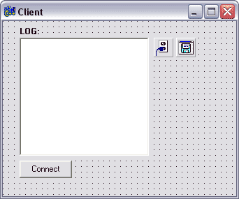
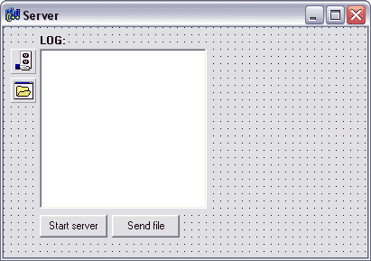

Очень часто возникают вопросы по работе с сокетами, а толкового описания работы с ними нету. Максимум что можно найти в Интернете - исходники чата и то для Delphi. Поэтому, чтобы понять принцип работы компонентов TClientSocket и TServerSocket в С++, предлагаю написать программу для обмена файлами.
В общих чертах передача файлов через сокеты выглядит следующим образом: вся информация передается пакетами, и если в одном из пакетов встречается #file - это значит, что пришел заголовок файла с последующей информацией о нем (имя, размер) и клиент должен принимать файл указанного размера. В чистом виде заголовок файла выглядит так: file#filename#filesize#. Когда клиент принимает такой заголовок, он обрабатывает его(выделяет имя файла и его размер), создает буфер размером filesize и в него пишет всю последующую информацию. Когда размер переданной информации равен размеру файла, посылает на сервер команду "end", сервер обрабатывает эту команду и закрывает поток.
Итак, начнем мы с того, что определимся, кто будет посылать файл, а кто принимать. В моем примере - Сервер отправляет файл, а клиент принимает, все просто, ничего сложного здесь нету. Дальше нужно оформить внешний вид клиента и сервера. У меня они выглядят так:
 |
 |
Я не цеплял на формы ничего лишнего, так как у нас нету цели сделать программу красивой, наша цель - правильная работа приложения. С внешним видом разобрались, можно переходить непосредственно к программированию.
Сейчас будем писать сервер - он будет отправлять файлы.
На форме: OpenDialog1 (TOpenDialog), Server (TServerSocket), Memo1 (TMemo) и две кнопки.
Сначала настроим Server:
Port = 1001 ; // Порт по которому будет работать и клиент и сервер Active = false ; // Пока неактивен
Эти настройки можно выбрать в Object Inspector'е.
Перейдем на вкладку Events и опишем подключение и отключение клиента:
В OnAccept:
Memo1->Lines->Add("К Вам подключились ;");
Для OnError:
ErrorCode = 0 ;
ShowMessage("Server Error");
Теперь напишем обработчик для нажатия кнопки запуска сервера:
Server->Active = true ;
Server->Open() ;
Memo1->Lines->Add("Создан сервер.");
Теперь нужно создать поток, который мы и будем передавать клиенту:
TMemoryStream *MS = new TMemoryStream ;
А теперь подходит время к самому главному в описании сервера - передачи файла клиенту. Пишем в обработчике кнопки Send (Отправить файл):
void *P; // указатель на файл
int Size ; // размер
if( OpenDialog1->Execute() )
{
MS->LoadFromFile( OpenDialog1->FileName ); // выбираем файл
Memo1->Lines->Add( "Загрузили требуемый файл в поток..." ); // заполняем лог
}
Server->Socket->Connections[0]->SendText( "file#" + OpenDialog1->FileName + "#" + IntToStr( MS->Size ) + "#" );
// отправляем заголовок
Memo1->Lines->Add ( "Послали заголовок" );
MS->Position = 0 ; // Устанавливаем поток в начальную позицию ;
P = MS->Memory ; // присваиваем указателю поток файла
Size = Server->Socket->Connections[0]->SendBuf( P , MS->Size ); // отправляем буфер клиенту; Size
//равно размеру отправленной информации
Memo1->Lines->Add( "Отправлено: " + IntToStr( Size ) + " из " + IntToStr( MS->Size ) ); // заполняем лог
С отправкой все в порядке, но серверу еще необходимо обработать команду "end", которая придет тогда, когда клиент примет файл. Для этого в OnClientRead пишем:
if(Server->Socket->Connections[0]->ReceiveText()=="end") // если клиент прислал команду "end"
{
Memo1->Lines->Add("Клиент принял файл"); // записываем в лог
MS->Clear() ; // Очищаем поток
}
С сервером и отправкой файла все готово, дальше нужно написать клиента, который бы принимал поток пакетов от сервера. Чем мы и займемся.
Для программы-клиента основной задачей является получение информации о файле, который передает клиент и получение, и сохранение самого файла. Итак, на форме - Client (TClientSocket) , Memo1 (TMemo), SaveDialog1 (TSaveDialog) и кнопка соединения - Button1.
Снова начнем с того, что настроим Client (TClientSocket1):
Port = 1001 ; // Клиент и сервер должны работать на одинаковых портах Active = false ; // Пока неактивен Address = 127.0.0.1 ; // Адрес укажем пока свой, что б протестировать работу сервера и клиента локально Host = 127.0.01 ;
Далее, объявим переменные, которые нам будут необходимы:
В *.h-файле проекта, в секции private объявим:
private: AnsiString Name;
После этого в *.cpp файле объявляем:
TMemoryStream *MS = new TMemoryStream ; // создаем поток под принимаемый файл void Write( AnsiString Text ); // ф-я записи получаемой информации в поток int Size ; // размер передаваемого файла bool Receive ; // передаем ли мы на данный момент файл AnsiString FileName ; // имя файла
Следующим шагом создания клиента - будет описание функции Write. Она должна сохранять получаемую информацию в файл.
void Write( AnsiString Text )
{
if(MS->Size < Size) // если мы еще принимаем файл и размер потока меньше размера файла
{
MS->Write( Text.c_str() , Text.Length() ); // записываем в поток
Form1->Memo1->Lines->Add( "Принимаем данные..." ); // пишем лог
}
if(MS->Size == Size) // если файл принят и размер потока соответствует размеру файла
{
Receive = false ; // останавливаем режим передачи
MS->Position = 0 ; // переводим каретку потока в начало
Form1->Client->Socket->SendText( "end" ); // пишем серверу, что мы приняли файл
CreateDir( "Downloads" ); // создаем папку для сохраненных файлов
MS->SaveToFile( "Downloads\\"+FileName ); // сохраняем туда наш файл
MS->Clear() ; // освобождаем поток
Size = 0 ;
Form1->Memo1->Lines->Add("Файл принят !"); // пишем в лог что файл принят
}
}
Далее, важно еще правильно описать событие OnRead, вот как оно должен выглядеть:
void __fastcall TForm1::ClientRead( TObject *Sender,
TCustomWinSocket *Socket )
{
AnsiString Rtext ; // текст, который посылает сервер
Rtext = Client->Socket->ReceiveText() ;
if( Receive == true ) // если мы в режиме передачи файла, то
{
Write( Rtext ); // записываем его в поток
}
else // если нет , то
{
Memo1->Lines->Add( "Приняли текст :" + Rtext ); // пишем в лог все что принимаем от сервера
if(Rtext.SubString( 0,Rtext.Pos("#")-1) == "file" ) // Если это строка типа
// file#filename#filesize#, то начинаем парсерить полученную информацию :
{
Rtext.Delete( 1 , Rtext.Pos( "#" ) ) ; // удаляем слово file
Name = Rtext.SubString( 0 , Rtext.Pos( "#" ) -1 );// Определяем имя файла
FileName = Name.SubString( Name.LastDelimiter( "\\" ) + 1 , Name.Length() );
// Выделяем чистое имя файла , например с c:\\test.txt , берем test.txt
Rtext.Delete( 1 , Rtext.Pos( "#" ) ); // Удаляем последний разделитель
Size = StrToInt( Rtext.SubString( 0 , Rtext.Pos( "#" ) - 1) ) ; // Определяем размер файла
Rtext.Delete( 1 , Rtext.Pos( "#" ) ); // Удаляем последний разделитель
Memo1->Lines->Add( "Размер файла: " + IntToStr( Size ) + " байт" ); // Выводим размер файла в лог
Memo1->Lines->Add( "Имя файла: " + Name ); // Выводим имя файла в лог
Receive = true;
// Переводим сервер в режим приёма файла
}
}
}
Все самое страшное позади, и теперь осталось только описать события OnConnect и OnError:
void __fastcall TForm1::ClientConnect( TObject *Sender,
TCustomWinSocket *Socket )
{
Memo1->Lines->Add( "Вы присоеденились ;" );
}
//---------------------------------------------------------------------------
void __fastcall TForm1::ClientError( TObject *Sender,
TCustomWinSocket *Socket, TErrorEvent ErrorEvent, int &ErrorCode )
{
ErrorCode = 0;
ShowMessage( "Client Error" );
}
А так же написать обработчик для кнопки соединения:
void __fastcall TForm1::Button1Click( TObject *Sender )
{
Client->Open() ; // открываем
Memo1->Lines->Add( "Коннектимся..." );
}
Вот и все готово, теперь можно протестировать, что же у нас получилось. Все принятые файлы клиент сохранят в папку Downloads.
Статью написал DeVoid © 25.10.04